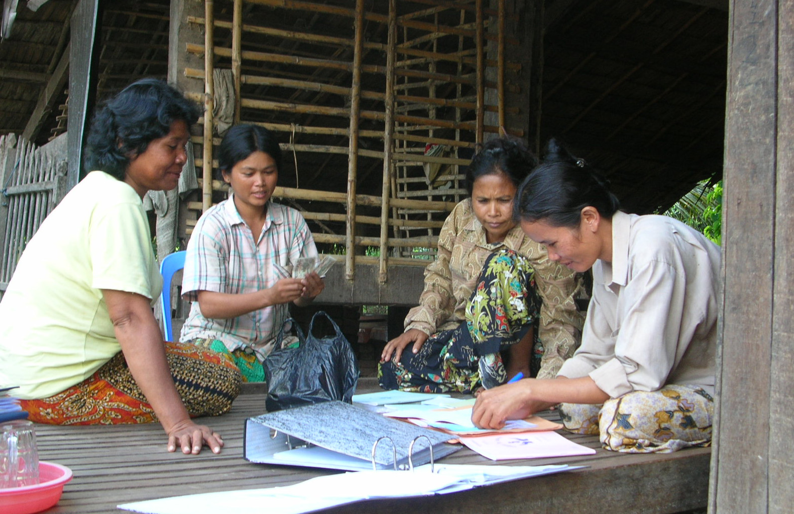

L’empowerment ou l’autonomisation est une notion de plus en plus utilisée qui désigne l’octroi de pouvoir et de responsabilités à un groupe d’individu. Cette notion est très liée à celle de responsabilisation des individus.
Qu’est-ce que l’empowerment?
Selon Katia Rouff, “le concept d’empowerment définit le développement du pouvoir d’agir des individus et des groupes sur leurs conditions sociales, économiques ou politiques”.
C’est donc un concept qui délimite la façon dont les individus acquièrent du pouvoir dans un contexte donné, afin d’atteindre des objectifs communs. Le plus souvent, cette notion de responsabilisation vise à améliorer une situation existante, sans pour autant passer par les institutions déjà en place, comme les pouvoirs publics, les entreprises ou encore les institutions bancaires. Il est souvent question d’autonomisation communautaire, étant donné que les personnes ayant des objectifs, intérêts et préoccupations communs sont souvent issues de communautés locales, nationales voire même internationales.
Ces communautés sont très hétérogènes. Elle peuvent regrouper des personnes ayant un revenu similaire, ayant des habitudes alimentaires communes ou encore ayant des intérêts politiques communs. Leurs engagements peuvent être spécifiques, liés à une problématique donnée, ou plus généraux autour d’un thème global.

Par Brett Matthews — Travail personnel, CC BY-SA 3.0, Banque d’épargne communautaire au Cambodge
Cette autonomisation des individus leur permet de prendre le contrôle sur certains aspects de leur vie, et induit généralement un rapport de force entre ces communautés et les pouvoirs en place dans la société. L’empowerment vise explicitement un changement social et/ou politique.
Le pouvoir est un élément de situation. Alors, si des individus composant une société viennent à remettre en cause son fonctionnement, en trouvant par eux-mêmes de nouvelles alternatives, ils peuvent devenir de nouveaux acteurs influents au sein même de cette société, et ainsi la faire évoluer.
C’est quelque-chose que l’on retrouve par exemple avec la microfinance. Ce mode de financement s’est peu à peu démocratisé dans les pays en développement, permettant à des personnes exclues des systèmes financiers de bénéficier de produits financiers. Ainsi, des personnes majoritairement pauvres ou à faibles revenus ont pu avoir accès au crédit. Cela leur a permis de développer un projet économique, souvent entrepreneurial, et donc de participer à l’essor économique de leur pays.
Les organismes de microfinance se sont alors développés très rapidement dans certains pays depuis quelques années, faisant parfois concurrence aux banques concernant les modes de financement de projet entrepreneuriaux.
L’empowerment en entreprise
Donner plus de pouvoir à ses collaborateurs, leur permettre de mener des projets en accord avec leur vision de l’entreprise, c’est ce qui définit l’empowerment au sein d’une organisation. Déléguer le pouvoir et faire de l’entreprise un projet qui tend à se rapprocher du projet collaboratif, c’est aussi un moyen d’éviter le désengagement des collaborateurs. C’est une vision qui apparaît souvent en parallèle du développement des entreprises libérées.
Bien souvent, un problème, s’il n’est pas structurel, se règle plus simplement au niveau des opérationnels et de leurs managers plutôt qu’à un niveau hiérarchique supérieur. En effet, les personnes les plus confrontées à la réalité du terrain auront une vision plus globale des enjeux liés au problème. L’empowerment c’est donc aussi de donner plus de flexibilité aux managers au sein de l’organisation, afin d’obtenir, in fine, une meilleure efficience.
La limite de l’empowerment en entreprise vient principalement du fait que, si cette voie est choisie par les dirigeants, elle n’est pas forcément adoptée par les autres salariés qui n’auront pas toujours le réflexe de prendre de nouvelles initiatives. Il faut que ce parcours soit choisi dans une optique de coopération avec les différents collaborateurs, et non dans une simple optique de délégation de la gestion.
Cet article a été rédigé par Johann Pillet